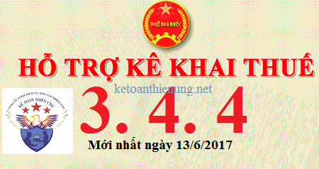

Ngày 13/06/2017 Tổng cục thuế đã nâng cấp lên Phần mềm HTKK 3.4.4, đây là phần mềm hỗ trợ kê khai thuế mới nhất hiện nay, cùng với ứng dụng Khai thuế qua mạng (iHTKK) phiên bản 3.4.5. Các bạn tải phần mềm HTKK 3.4.4 miễn phí về tại đây:
TỔNG CỤC THUẾ THÔNG BÁO
V/v: Nâng cấp ứng dụng Hỗ trợ kê khai (HTKK) phiên bản 3.4.4, ứng dụng Khai thuế qua mạng (iHTKK) phiên bản 3.4.5 đáp ứng yêu cầu nghiệp vụ theo Thông tư số 37/2017/TT-BTC ngày 27/04/2017 của Bộ Tài chính về việc sửa đổi, bổ sung Thông tư số 39/2014/TT-BTC ngày 31/03/2014 của Bộ Tài chính, Thông tư số 26/2015/TT-BTC ngày 27/02/2015 của Bộ Tài chính
V/v: Nâng cấp ứng dụng Hỗ trợ kê khai (HTKK) phiên bản 3.4.4, ứng dụng Khai thuế qua mạng (iHTKK) phiên bản 3.4.5 đáp ứng yêu cầu nghiệp vụ theo Thông tư số 37/2017/TT-BTC ngày 27/04/2017 của Bộ Tài chính về việc sửa đổi, bổ sung Thông tư số 39/2014/TT-BTC ngày 31/03/2014 của Bộ Tài chính, Thông tư số 26/2015/TT-BTC ngày 27/02/2015 của Bộ Tài chính
- Đáp ứng yêu cầu nghiệp vụ theo Thông tư số 37/2017/TT-BTC ngày 27/04/2017 của Bộ Tài chính về việc sửa đổi, bổ sung Thông tư số 39/2014/TT-BTC ngày 31/03/2014 của Bộ Tài chính, Thông tư số 26/2015/TT-BTC ngày 27/02/2015 của Bộ Tài chính, Tổng cục Thuế đã hoàn thành nâng cấp ứng dụng hỗ trợ kê khai thuế (HTKK) phiên bản 3.4.4, ứng dụng Khai thuế qua mạng (iHTKK) phiên bản 3.4.5. Trong đó, ứng dụng cập nhật kiểm tra ràng buộc các chỉ tiêu trên Thông báo phát hành hóa đơn đáp ứng yêu cầu “Thông báo phát hành hóa đơn và hóa đơn mẫu phải được gửi đến cơ quan thuế quản lý trực tiếp chậm nhất hai (02) ngày trước khi tổ chức kinh doanh bắt đầu sử dụng hóa đơn”.
Xem thêm: Thủ tục thông báo phát hành hóa đơn
- Bắt đầu từ ngày 14/6/2017, khi lập Thông báo phát hành hóa đơn, người nộp thuế sẽ sử dụng các mẫu biểu kê khai tại ứng dụng HTKK 3.4.4, iHTKK 3.4.5 thay cho các phiên bản trước đây.
Tổ chức, cá nhân nộp thuế tải phần mềm HTKK 3.4.4 về tại đây:
- Mọi phản ánh, góp ý của tổ chức, cá nhân nộp thuế được gửi đến Cục Thuế theo các số điện thoại, hộp thư điện tử hỗ trợ NNT về ứng dụng HTKK, iHTKK, do cơ quan Thuế cung cấp.
Kế toán Diệu Tâm xin chúc các bạn thành công!
-----------------------------------------------------
